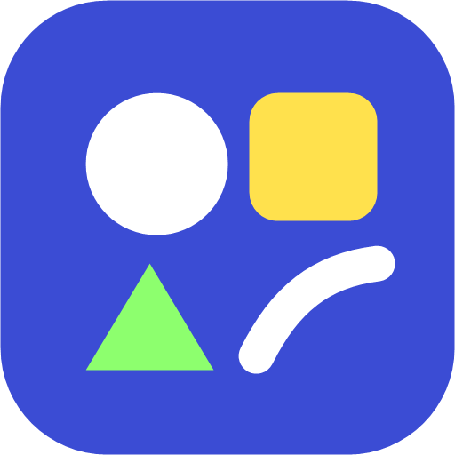

Мастерская
Холст, трекер, документы, рисунок, конвертер и презентации — в одном приложении. Работает без интернета.
Скачать для Android (APK, 1 МБ)Открыть в браузере (iPhone и компьютер)- Скачай APK и открой файл.
- Если Android спросит — разреши установку из этого источника.
- На iPhone: открой сайт в Safari → «Поделиться» → «На экран Домой».